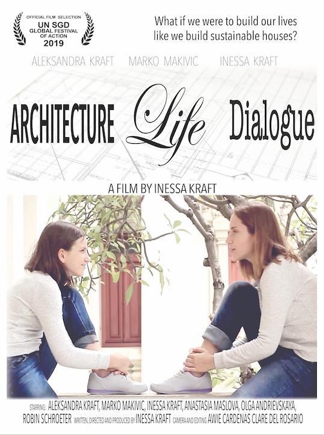

Peroration
Webinar Series-1
We can celebrate the great progress the world has made in becoming more prosperous and fair. But there's a shadow to the celebration. in just about everyway, women and girls lag behind. There are still gross inequalities in work and wages, lots of unpaid women's work such as child care and domestic work, and discrimination in public decision-making.But there are grounds for hope. More girls are in school now compared to in 2000. Most regions have reached gender parity in primary education.The percentage of women getting paid for their work is on the rise. The Sustainable Development Goals aim to build on these achievements to ensure that there is an end to discriminationagainst women and girls everywhere.
Webinar Series-2
In this talk Sunil explores the idea of ocean governance with a focus on Blue Economy. After providing a few definitions of blue economy he explains the global and regional legal framework that exists by way of providing governance. He then goes on to talk about some tangible and intangible aspects of blue economy focusing on India with the physical assets and maritime context and some possible - areas of strength. What are the challenges for India then? Sunil firmly believes that every challenge offers an opportunity to do something about it.Regional cooperation is an area which offers tremendous potential. There is also a great need to improve the synergies among the existing government departments. He then presents some specific examples of how Blue economy could create a win-win situation for India and concludes with resilience strategies to survive, adapt and flourish.
Closing Ceremony
The failure of governments and international institutions to prepare for, prevent and adequately respond to the COVID-19 pandemic exposed a much deeper problem: the inability of the predominately national way our world is organized to meet our common global threats — not just deadly pathogens, but climate change, weapons of mass destruction, and systemic global poverty. These threats show that humanity is interdependent, whether or not we wish to be.Each person's well-being resides in every other person and in our common ecosystem. What affects one affects everyone, and an attitude of everyone for themselves ultimately harms all. We must find ways to work together and help each other — an act of global self-preservation. That is OneShared.World's mission — people from every continent committed to the power of collective action to solve our greatest common challenges.
Entire Coverage of Film Festival
Relaying Through The Reels:
Intro
In a time of climate crisis, when Mother Nature is suffering from the bruises we as humans, in our rapacious cupidity, have inflicted on her, sustainable development is the only key that can take us forward. Keeping that in view, United Nations Member States adopted 17 Sustainable Development Goals (SDGs) in 2015 as a “universal call to action to end poverty, protect the planet and ensure that all people enjoy peace and prosperity by 2030”. Youth has a prominent role to play in this, and to introduce the concept to and foster it among the NITR Junta is the SDG Campus Club. In a pioneering step, the club, established this year, conducted ‘SDG International Film Festival’, a two-day event that screened award-winning films based on topics of SDGs, along with guest talks by the Directors. Read on Mondaymorning...
Event
PRE-FESTIVAL WEBINAR
SDG 5- GENDER EQUALITY
Before the commencement of the 2-day International Film Festival, a pre-festival webinar was organized by the SDG Campus Club, NIT Rourkela, which primarily focused on the 5th sustainable development goal, i.e. Gender Equality. The webinar was addressed by Ms Ashley Maria, a North American delegate to the United Nations Commission on the Status of Women - the principal global policy-making body dedicated exclusively to gender equality and the advancement of women. She demonstrated an insightful presentation on Gender Equality and Reduced Inequalities encompassing potent videos and slides. The present scenario of women witnessing violence, discrimination, and the burden of unpaid care work was exquisitely conveyed to the online attendees in this session. Along with this synopsis, she unveiled the progress of young girls attending school rather than being forced into early marriage, and women serving in parliament and positions of leadership! The idea of "Let's make a world with and for women." was put forward concerning several decisions like Culture, Policy and law, Budgeting, Safety and Urban planning, Labour Market discrimination, and Educational Access. Enduring the spirit of "Leave No One Behind", Ms Ashley Maria highlighted the difficulties faced by the LGBTQ Community people. Later she also considered some approaches to end these stereotypes against LGBTQ by inculcating the idea of supporting them to set up their businesses. The explanation of the 2030 agenda deadline marked the termination of her presentations which was followed up by genuine questions from the participants. Read on Mondaymorning...
Event
OPENING CEREMONY
3RD OCT 2020
Prof. Ramakrishna Biswal, Department of Humanities and Social Sciences, NIT Rourkela, greeted the online gathering with regards to the opening ceremony of SDG International Film Festival-2020. He highlighted the importance of the 17 SGDs set up by the United Nations in 2015, intended to be achieved by the year 2030, as a part of UN Resolution called the "2030 Agenda". With the motive to highlight the significance of all the SDGs, he portrayed a compelling presentation accompanied by his explanations. During the genesis, he bought out the concepts of Universality- Goals apply to every nation, Integration- Goals are interconnected, and Transformation- Involving fundamental changes in our lifestyles. He sustained his perseverance to deliver analysis, starting from No Poverty to Partnerships for the Goals. Along with the display, he shot out some fundamental questions about development and human behaviour, which was followed by the stating difference between the Reductionist approach and the Holistic approach of human behaviour. He also decided to give some considerations that ail the system with its solutions. After giving a brief description of each of the 17 SDG, Prof. Ramakrishna Biswal was all set to illuminate various inquiries to the best of his knowledge. Read on Mondaymorning...
Event
SAYANG KALIMANTHAN
SDG 13- Climate Action
2015 Indonesia Forest Fires The very first documentary in the SDG Film Festival was ‘Sayang Kalimantan’, an intriguing short film based on the 2015 Indonesia Forest Fires that continued for a major three-months, completely changing the geo-political status of the country and bringing into world view the tragedy of deforestation and climate change going on in the South-East countries, and succumbing lakhs of people to death every year. The screening was followed by a guest talk by the Director of the film, Mr Wally Tham, who introduced the attendees to the scathing condition of Indonesia, and the reprehensible response of the authorities and the government regarding this matter that requires an urgent address. He also talked about the various initiatives he has taken to counter this climate change and help the natives suffering from many ailments due to this environmental hazard. He said, Pillars of our work are Stories (narratives through media), Change (organizational and community intervention) and People (leadership training and coaching). He narrated how he started this work of his, and what made him believe that he can actually make a change with his efforts. He is the person behind the pioneering ‘Haze Shelter’ that he built for the people of Kalimantan, which is a house, made up of concrete with a two-stage filter. The results he achieved were glorious. This insightful session was followed by a Q&A Round, where the attendees asked some really sagacious questions, which were answered by Mr Wally Tham with utmost patience and observance. Read on Mondaymorning...
Event
CREATE 2030 AND MOTHER’S CRY
Keynote speaker: Ms Lisa Russells
Create 2030 was screened- an initiative that addresses Hunger, access to education, no gender, race issues and loads of other stigmas and aims to sort issues with mutual understanding. ( Details further in the article) Following the enlightening prior sessions, this started with the introduction of filmmaker and Documentary Director Ms Lisa Russells from Kenya, who is a filmmaker, recipient of 2 Emmy awards, the founder of Create 2030 initiative and the list goes on henceforth. An ardent humanitarian aid worker in her past life and a successful filmmaker in the current, Lisa has been a part of TedX talks and been a keynote speaker in several events. She went on to say about how being a frontline aid landed her at the US Embassy, where she realized the importance of proper storytelling while interacting with women from various backgrounds. Having no formal knowledge in film making, she taught herself and finally created and distributed her film on BHS, which served as a power boost to the latter part of her career. The event moved forward with discussions on the imbalance of power between filmmakers and humanitarian subjects, often leading to irresponsible content. Charter of storytelling rights, focusing on the problem and sparing the victim. One of the primary issues talked about was the air surrounding the involvement of artists of all sorts in important decisions and discussions with relevance to the fact that creative thinking and solutions form the basis of artists and thus, their presence could challenge the status quo head-on. “Artists can be everything UN cannot”, was the remark of a UN Official before Lisa regarding the matter. During the talk, a documentary named Mother’s Cry was screened, aimed at spreading awareness regarding the raging environmental problems slowly suffocating earth and life as a whole. All the discussions summarized to the Create 2030 initiative, which involves creative workshops, projects and talks with professional storytellers like featured artists, academicians, policymakers and entrepreneurs worldwide. Hosted by UNESCO and aimed at elevating the role of creative communication and innovative thinking, the event is open to interested artists from all backgrounds and fields, irrespective of their contributions and stage of growth, at Create2030.org. In lines with the above, the UN has even declared 2021 as the International Year of Creative Economy for Sustainable Development. The talk was followed with an interactive question-answer session on the issues addressed, and a final thanksgiving by Leo concluded the session Read on Mondaymorning...
Event
AQUASTORY
SDG 6- Clean Water and Sanitation
Ms Diana Henriques, Project Manager at Lisboa-E-Nova Safe water is now a luxury for many, and the situation of the future can be harsher if we continue our irrational act of wastage of such a commodity, without which we can’t imagine the future of earth as a whole. This composite notion has been made very simple and comprehendible, while making you perceive the stark reality, by a Lisbon feature film, ‘Aquastory’. The film opened with excellent response and went on to win the UN Award that further increased its reach, and was seen and hugely appreciated by people from around the world. The enchanting way with which this short film has been presented is its greatest virtue, making it much more relatable, and how we ourselves are trading the path of our own doom. The screening was followed by a guest talk by Ms Diana Henriques, Project Manager at Lisboa-E-Nova, who explained how much of research and hard work went behind making this film with a breath-taking concept and an inescapable reality of today. Making an animation movie was with the motive of reaching both adults and children, creatively, while not missing out on the gravity of the topic. “The message”, she said may look simple, but has the complexity embedded in it which we all need to realise and grow accordingly.” The issue, though so crucial, is indeed under-addressed, and that is what Ms Diana’s team wanted to bring a change in, and try making a difference in every way possible. The talk then went forward with a Q&A session in which Ms Diana elaborated on what her future plans are, and how she is planning to spread the required awareness and implement various other programmes. Read on Mondaymorning...
Event
ARCHITECTURE LIFE DIALOGUE
Ms Inessa Kraft
The last session of the first day was well headed by Ms Inessa Kraft, documentary director of "Architecture Life Dialogue". This documentary illustrates the story of a girl dreaming of becoming architecture and meeting her future self. It essentially implants the concept of sustainable architecture in this comprehensive era, where modern buildings necessitate heaters in winter and air conditioners in summer! This notion of sustainable houses does not harm the environment and meet the level of comfortability at best. They are known as Zero-Energy Houses or Passive Solar Houses. With the aid of her documentary, she tried to depict the contrasting aspects of our society by asserting various examples. She also claimed, when we have something that stays idle, we can give it a new life by sharing it. In the later part of the documentary, she conveyed her idea of being important to someone as a human being not as a service or a product, which is summarized as the architecture of life! After her utterance, she replied and clarified several queries received from the participants end with noble gestures and patience. Read on Mondaymorning...
Event
MR JACK SIMS
4TH OCTOBER 2020
After a great acknowledgement from the first day, the first concourse of day-2 was started by the Founder of the World Toilet Organization- Mr Jack Sims. He founded the organization on 9th November 2001, which is now celebrated worldwide each year towards improving the state of toilets and sanitation globally. Initially, he discussed the rape cases in India, how the people blame the girl instead of the rapists, majorly the Nirbhaya case. Taking an unfortunate instance, Mr Jack Sims claimed that "It's not only the rapist raping a girl but the entire society raping the girl!". Then he pointed out several predicaments prevailing in the society like poverty, hunger, lack of education, no electricity, etc, and eventually made everyone realize the necessity for proper sanitation and toilets. He applauded the Bollywood movie- "Toilet: Ek Prem Katha" featuring Akshay Kumar and Bhumi Pednekar, focusing on the stereotypes of Indian culture regarding female sanitation. He put off his idea of making domestic toilets by digging holes using biodegradable materials like bamboo or straw. He started his initiative in India by establishing World Toilet College in Aurangabad, Maharashtra, hindering the concept of manual scavenging. After an insightful description of toilets and sanitation, the participants posted interrogations that were answered by him. Read on Mondaymorning...
Event
PRESENTATION BY PARTNER CLUBS:
club culture
As a glimpse of the club culture, the respective club personnel provided presentations on a few NIT Rourkela clubs, along with their aims and objectives. The featured clubs included Cinematics, Hourglass, The Mavericks, Genesys and the Voice of Voiceless. Read on Mondaymorning...
Event
SURVIVOR GIRLS
SDG 5- Gender Equality and SDG 7- Affordable and Clean Energy
This poignant and inspiring documentary that beautifully amalgamates the two crucial SDGs is a story of the Kolkata based Sanlaap Foundation working towards saving girls from the abhorrent world of sex trafficking and imparting them knowledge, empowering them and making them independent, and how their persistent problems led them to take path-breaking steps of installing facilities like solar panels and water-purification system with the aid of Econic Foundation. The results of these progressive steps have proved to be life-changing for the girls who have already faced the gruesome realities of this dark world, and have brilliantly enhanced their mental well-being. The premiere was followed by the talk by Ms Nicole Watson, founder of Econic Foundation which has been working around the world for the upliftment of women and children via raising voice against climate change and going on-ground to bring a real change by pioneering steps. She also brought forward her future plans and how she and her companions are working day in and out, rather than just posting Instagram and Facebook stories about making a difference. After this moving session, she welcomed questions from the audience, the answers to which further made her goals clear, and gave us a direction to work in every small way possible. Read on Mondaymorning...
Event
THE CONDUCTOR
SDG-11
Following the sessions in the first half, the second half commenced with the screening of the Conductor by Ms Bethany Borg, a renowned animator with the vision of giving life to ideas through her skills. The theme of the short film revolves around the incessant fight between nature and modernization. A man, who joins sides with nature to give life to urbanization and revive nature by perfectly amalgamating the urban setups with the green hue. The show then moved on to presentations and performances of partner clubs. Two short films by Cinematics, the filmmaking club of nit Rourkela, soulfully portrayed the importance of cleanliness and pressed the need for more people to stick responsibly to their moral obligation of keeping their surroundings clean and thus, disease-free. The second one was a rather concise portrayal of the costs of being a soldier and how a fair share of the implications has to be borne by the family and friends of the person as well. This was followed by a series of performances by Maverics, the dance club of NIT Rourkela, setting the screens on fire with their electrifying moves. The spotlight was henceforth shifted to Voice of the voiceless, with an accurate portrayal of not only the woes of the furry creatures but also how the club had united all means to feed and take care of them amidst the crisis. This was followed by information on a few clubs by the club heads. Read on Mondaymorning...
Event
SPEED NETWORKING SESSIONS
SDG-17
The speed networking session, which commenced henceforth was the first of its kind in India, having been organized in several countries worldwide previously. Involving group discussions on allotted topics to unbounded communication to learning and acquainting yourself with new people, the event reached a peak of interaction amongst the participants, while approaching the end lines of the event. Read on Mondaymorning...
Event
MR. JAMIE METZL
SDG 16- Peace and Justice Strong Institutions & SDG 17- Partnerships to achieve the Goal
The final and ultimate session was set off with the comprehensive discourse by Mr Jamie Metzl, Founder and Chairperson of OneShared. World. He made everyone realize the importance of coming together and inspiring each other to establish tremendous wonders. According to him, global predicaments like poverty, environmental collapse, and ecosystem destruction existed for a prolonged time but grew highlighted after this COVID-19 pandemic. Concerning the amelioration of the world, he stated 3 measures: 1.We need to understand what happened. 2.We need to orient ourselves. 3.We need to pivot towards building the kind of world that we want to live in on every level i.e. from personal to a global level. Following these prominent approaches, Mr Jamie Metzl felt privileged to address the Indian audience delivering the example of Mahatma Gandhi. He said that Indian history is not only about cosmic changes, but it is a message that depicts the connections between cosmic change, superstructural change, and individual action. He asserted his "RISE AND FALL" campaign during the terminus. In the end, a Q&A session was accompanied to clarify queries of the participants. The SDG International Film Festival concluded on a triumphant note with a vote of thanks to all collaborating clubs namely- Phoenix Events and Entertainment, Big Red Button, Lisboa e Nova, NSS NITR, Ignited minds Youth Model UN, Youth For Sustainability, Meta Academics Cell-SIT, CET Literary Society, Cinematics, Clarion, Cognizen, D361, Design Tab, Finance Club, Fusion, Genesys, Hourglass, ICE: UK Chapter, Shecoders, Leo, Literabuzz, Mavericks, Pantomime, Rainbow Dot, Rotaract, Steellun NITR, The Bioscience Society, Voice of voiceless, and Webwiz. Monday Morning- NIT Rourkela’s student media body also happened to be a part of the media collaboration. Read on Mondaymorning...
Event
Following the success of the prior events, the SDG Campus Club also organized a post-festival webinar on“Ocean Governance- Blue Economy & India” by Sunil Murlidhar Shastri, FRGS FRSA Director on 14th October 2020.SDG President, Pratyush Ranjan and Secretary, Suman Acharya stated: that The SDG International Film Festival aimed to bridge the gap between policymakers, civil society, non-profits, and the youth. In a challenging time, such as COVID-19, it is impossible to have physical interaction. So, we tried to provide a forum for engaging with the UN Sustainable Development Goals virtually and promoting the idea of the 17 SDGs through motion pictures and expert talks in various fields. It was both a challenge as well as a trial for future activities of the SDG Campus Club. We did have 300+ registrations due to which the platform for hosting was a problem but Farm to Folk Solutions (our partner organization) came forward to help us, and we hosted the event on GoToWebinar. &-- Though there were specific issues as reported by some participants as high data consumption on the platform and a few initial hiccups in syncing the international time zones for the speakers but overall, the event was smooth and successful. It was an entirely free event with zero registration fees, but the reason for choosing GotoWebinar included allowing large scale participation of students since the platform can host up to 500 participants and screening of movies which is not supported by other platforms such as Zoom. We did expect huge participation from the students of NIT Rourkela since we had collaborated with more than 25 institute clubs along with a few outside clubs and organizations. The number of registrations was good enough but to our surprise, only a few students of NIT Rourkela turned up for the event, and a large percentage of the participants were from outside. Read on Mondaymorning...
Event
Feature Short Film & Documentaries
Create2030 is a new advocacy video and creative Campaign to engage artists and storytellers in meeting the #SDGs. Can artists help to change the world? #Create2030 thinks so. Directed by Emmy-winning filmmaker,Lisa Russell.

CREATE 2030
may look simple, but has the complexity embedded in it which we all need to realise and grow accordingly.” The issue, though so crucial, is indeed under-addressed, and that is what Ms Diana’s team wanted to bring a change in, and try making a difference in every way possible
PROTECTING OUR PLANET: AQUASTORY
Jack Sim, aka "Mr.Toilet," is a crusader for global sanitation.Born in the Singapore slums, Sim knows firsthand the agonies of not having a proper loo. Now he's dedicating his life to a crisis no one dares talk about.
MR.TOILET: THE WORLD'S #2 MAN
An adventurous, philosophical, and fun film about serious topics: sustatnabifity.sharing economy. food waste, conscious consumption and the principles of sustainable architecture.
ARCHITECTURE LIFE DIALOGUE
This short film from Watly Tham of Singapore documents how the filmmaker and his colleagues spent two years designing and building indonesia's first functioning haze shelter in the town of Kalimantan.
SAYANG KALIMANTHAN
Sustainable Futures: Survivor Giris documents the impact of a solar energy and water filtration system donated to a sex trafficking rescue shelter for underage girfs in Kolkata,India.
SUSTAINABLE FUTURES:SURVIVOR GIRLS
Based in the U.K.,filmmaker Bethany Borg created an animated world in which orle man commits "citywide plant anarchy" to bring nature back to his urban environment.
THE CONDUCTOR
INTERNATIONAL FILM FESTIVAL
-
About SDG FILM FESTIVAL
To build awareness of the SDGs and the 2030 Agenda as well as to mobilize and scale up action on the ground, the United Nations Secretariat, through the Division for Sustainable Development Goals of the UN Department of Economic and Social Affairs (DSDG/DESA), has been organizing since 2018 an “SDGs in Action Film Festival”, on the margins of the High-Level Political Forum. The United Nations High-Level Political Forum on Sustainable Development (HLPF) is the United Nations central platform for follow-up and review of the 2030 Agenda and the Sustainable Development Goals (SDGs) at the global level, with inputs from the regional and national levels.
-
Webinars & Expert Talks
Get a chance to attend the pre and post festival webinars and expert talks on registering for the film festival.
-
International Networking
Be the part of a diverse community of change driven college students and working professionals. Opportunities for collaborative projects and cross cultural exchange during the festival.
-
Documentary Screening
Enjoy an exclusive screening of our selected award winning documentaries and short films throughout the 2 days and interact with the Directors live and ask questions.
-
Certificates & Recognition
Get a recognition certificate from NIT Rourkela for being a delegate at the International Film Festival including Special Certificates for Heads of Delegations of Colleges and Universities.
SPEAKERS & GUESTS & TEAM FOR SDG INTERNATIONAL FILM FESTIVAL 2020
.jpg)
PROF. RAMAKRISHNA BISWAL
Dept of Humanities & Social Sciences, NIT Rourkela
.jpg)
INESSA KRAFT
Architecture
.png)
LISA RUSSELLS
Create 2030 & Mother’s Cry
WALLY THAM
Sayang Kalimantan
DIANA HENRIQUES
Proctecting Our Planet: "‘Aquastory’"
NICOLE WATSON
Sustainable Futures :Survivor Girls
.jpg)
JACK SIMS
Mr.Toilet-THE WORLD'S #2 MAN
.jpg)
BETHANY BORG
The Conductor
.jpg)
PRATYUSH RANJAN
President
.jpeg)
SATYAJIT RAIGURU
Vice-President
SUMAN ACHARYA
Secretary
.jpg)
JITAMITRA SAHU
Treasurer
.jpeg)
SHUVAM MOHAPATRA
Team Head


{kind=link}